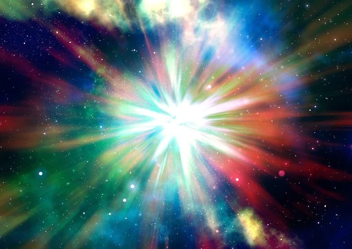
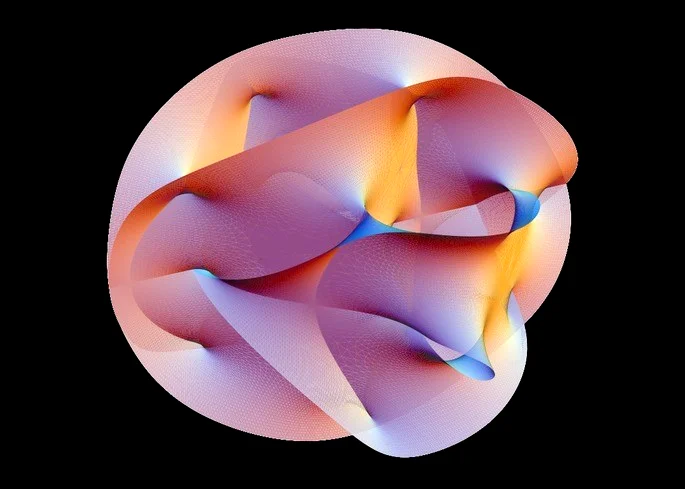

A origem do universo é um tema disputado por diversas teorias, dentre elas, a mais aceita atualmente pela ciência é a teoria do Big Bang. Entretanto, existem outras teorias que vão para além da explosão que deu origem a tudo o que existe. Alguns cientistas propõem uma adaptação do Big Bang, outros apontam novos caminhos para responder à pergunta “de onde viemos?”.
Segundo a teoria do Big Bang, o universo teria sua origem entre 13,7 e 14 bilhões de anos atrás, a partir de uma grande explosão. Essa explosão teve como início uma singularidade, um único átomo (átomo primordial) infinitamente denso e muito quente, que concentrou muita energia, explodiu e deu origem ao universo. A partir da explosão desse núcleo de altíssima densidade e temperatura, o universo entrou em um estado de expansão, resfriamento e formação de matéria. Assim, originaram-se as galáxias, as estrelas e os planetas.
Essa resposta para a origem do universo foi elaborada pelo astrônomo belga George Lemaître (1894-1966), tomando por base a teoria da relatividade proposta por Albert Einstein. O universo em expansão proposto por Lemaître, foi confirmado por Edwin Hubble (1889-1953), galáxias mais distantes se afastam em uma velocidade maior que as mais próximas (Lei de Hubble). Assim, o Big Bang teria dado início ao espaço-tempo do modo como conhecemos, impossibilitando a existência de um momento anterior.
Enquanto a teoria do Big Bang é baseada na relatividade de Einstein, a Gravidade quântica em loop se sustenta na física quântica. A princípio, esse pensamento reorganiza a ideia de continuidade do espaço-tempo proposto pela teoria da relatividade. Assim, o espaço-tempo seria granular e esses "grãos" seriam organizados uns ao lado dos outros, dando uma impressão de continuidade. Logo, não haveria uma singularidade, como no Big Bang, mas um "grande encontro" de um universo anterior em colapso, semelhante a um buraco negro.
A Teoria M baseia-se na relatividade geral e na ideia da mecânica quântica e busca unir cinco diferentes teorias das supercordas e a super gravidade.
Com isso, as diferentes teorias estariam todas essencialmente corretas e, para isso, é necessária a compreensão da existência de 11 dimensões simultâneas (10 dimensões e o tempo). Dessas dimensões, apenas quatro são acessíveis (eixos x, y, z e o tempo). As outras dimensões estariam enroladas e inacessíveis para o conhecimento humano, mas seus efeitos teriam influência sobre o desenvolvimento de outros universos possíveis. Assim, o nosso universo, segundo a Teoria M, é parte de um multiverso constituído de inúmeros outros, que se afastam, expandem, se chocam e recomeçam.